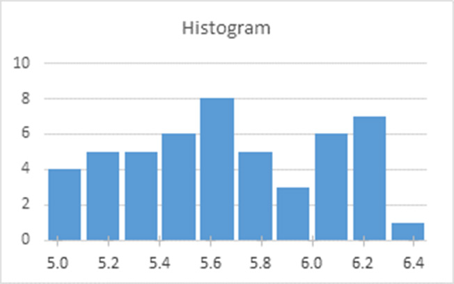
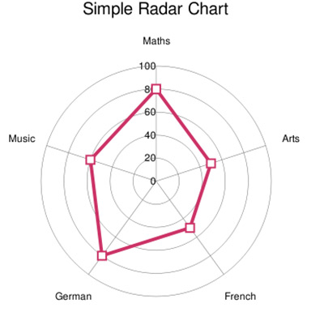
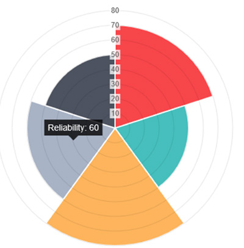
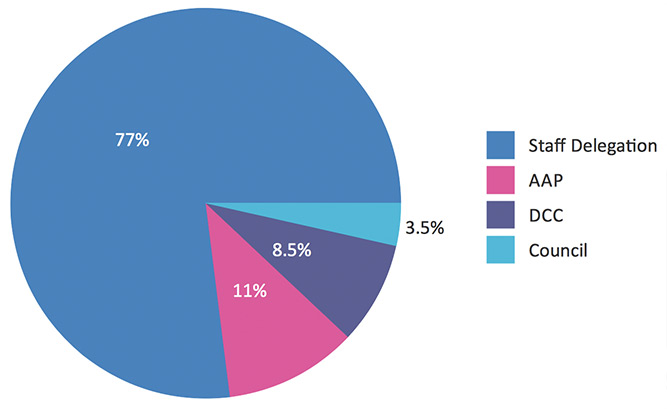
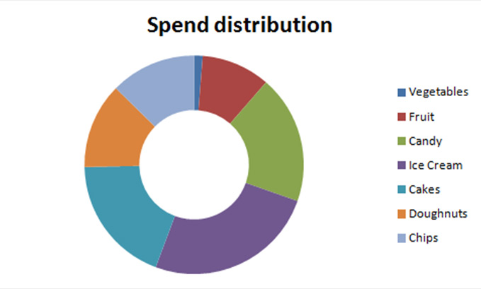

Chart.js
Easy, object oriented client side graphs for designers and developers.
Chart JS Website Link6 Chart Types
Visualize your data in different ways animated and customizable
Line chart

bar chart

radar chart

polar area chart

pie chart

doughnut chart

HTML5 Based
Uses the HTML canvas Element.
Support modern browsers.
Responsive.
Getting Started
Html Code
<!doctype html>
<html>
<head>
<meta charset="utf-8">
<title>Poll Chart</title>
<script src="js/Chart.js"> </script>
<script src="js/bar.js"> </script>
<style type="text/css">
canvas { border: dotted 1px black; }
h2{ text-align:center; }
section{ margin:1em auto; max-width:600px; width:100%; }
</style>
</head>
<body>
<section>
<h2>2016 National Democratic Primary Poll Chart</h2>
<canvas id="canvasBar" width="460" height="570"> </canvas>
</section>
</body>
</html
JavaScript Code
var barChartData = {
labels:['Aug.', 'Sept.', 'Oct.', 'Nov.', 'Dec.', 'Jan.', 'Feb.' ],
datasets: [
{
label:'Clinton',
fillColor: 'rgba(30,144,255, .55)',
strokeColor: 'rgba(30,144,255, .85)',
highlightFill: 'rgba(30,144,255, .75)',
highlightStroke: 'rgba(30,144,255, 1)',
data:[53, 45, 44.5, 54.8, 55.7, 54.8, 50.8 ]
},
{
label:'Sanders',
fillColor: 'rgba(173,216,230,.55)',
strokeColor: 'rgba(173,216,230,.85)',
highlightFill: 'rgba(173,216,230,.75)',
highlightStroke: 'rgba(173,216,230,1)',
data:[18.4, 23.5, 24.6, 30.3, 31.4, 35.1, 40.5 ]
}
]
}; window.onload = function(){
var ctx = document.getElementById('canvasBar').getContext('2d');
var myBarChart = new Chart(ctx).Bar(barChartData, {
responsive: true,
animationEasing: 'easeOutElastic',
barValueSpacing : 10,
scaleLabel: "<%= value + '%'%>",
});
}